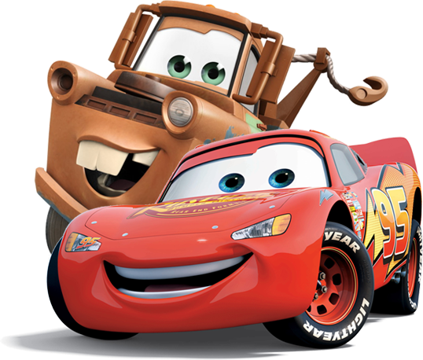

La vida es como una autopista
Cars es una serie de películas animadas de Pixar que sigue a Rayo McQueen, un coche de carreras que descubre el valor de la amistad, la humildad y el trabajo en equipo. Ambientadas en un mundo de coches parlantes, las películas combinan humor, emoción y enseñanzas para toda la familia.
